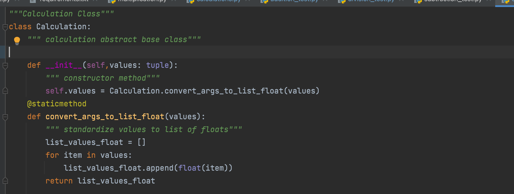
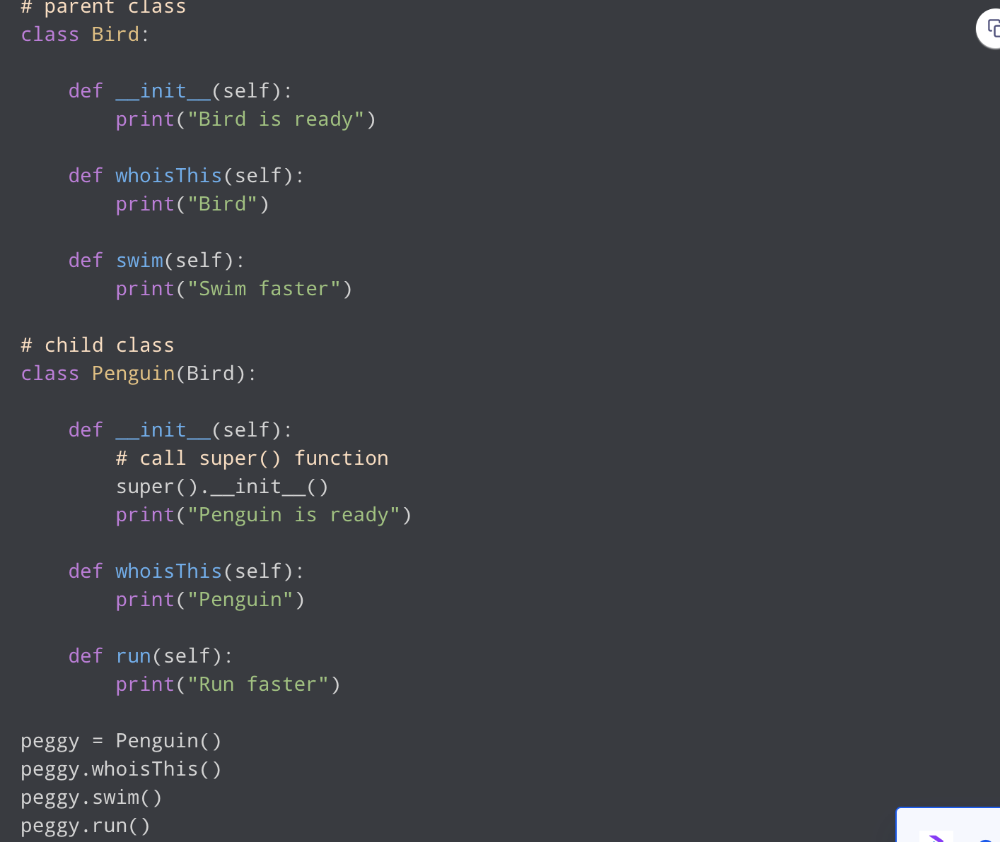
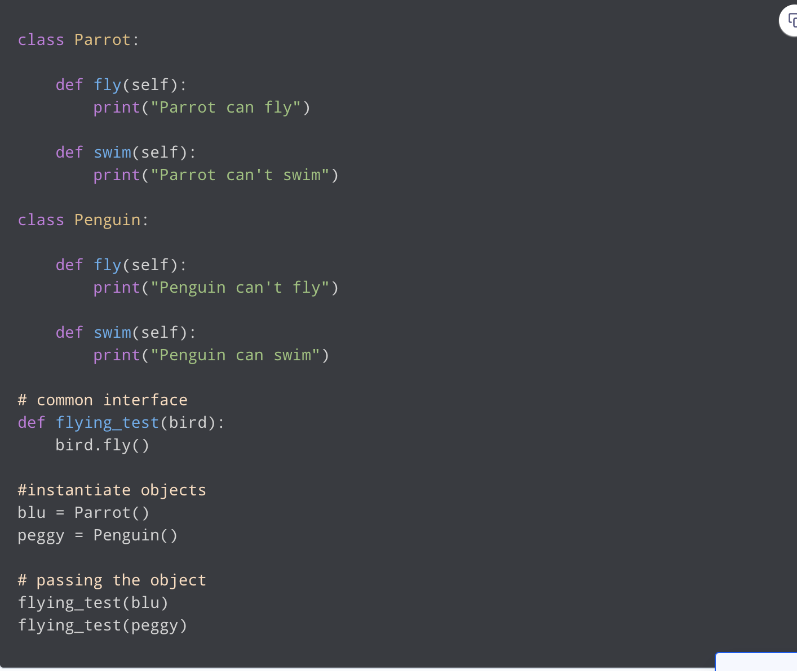
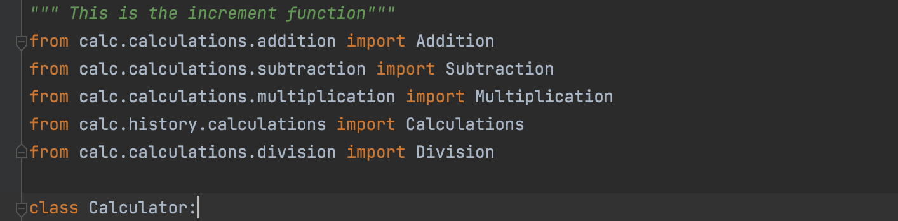

What is Object-Oriented Programming?
Object-Oriented Programming(OOP), is mainly about creating "objects". An object is a group of interrelated variables and functions. Variable are often called as a properties of the object whereas functions are called as the behavior of the objects. These objects gives a better clarification and better quality of the program.
For example: in our calculator program
the calculator is the object. If we consider the calculator as an object then its properties would
be addition, subtraction, multiplication, and Division. Below shown the image of the calculator file:
Before we demonstrate the principals of OOPs, let's learn some terminology of OOps
| OOPs Terminology | Description |
|---|---|
| Class | A user-defined prototype for an object that defines a set of attributes that characterize any object of the class. |
| Class Variable | that is shared by all instances of a class. Class variables are defined within a class but outside any of the class's methods. . |
| Data Member | A class variable or instance variable that holds data associated with a class and its objects. |
| Function Overloading | The assignment of more than one behavior to a particular function. The operation performed varies by the types of objects or arguments involved. |
| Instance Variable | A variable that is defined inside a method and belongs only to the current instance of a class. |
| Inheritance | The transfer of the characteristics of a class to other classes that are derived from it. |
| Instance | An individual object of a certain class. An object obj that belongs to a class Circle, for example, is an instance of the class Circle. |
| Instantiation | The creation of an instance of a class. |
| Method | A special kind of function that is defined in a class definition. |
| Object | A unique instance of a data structure that's defined by its class. An object comprises both data members (class variables and instance variables) and methods. |
| Operator overloading | The assignment of more than one function to a particular operator. |
Principals of OOPs
There are four principals of Object-Oriented Programming
Encapsulation
In Python, we can restrict access to methods and variables. This prevents data from direct modification which is called encapsulation.
Inheritance
It is a way of creating a new class for using details of an existing class without modifying it.
Polymorphism
The word polymorphism means having many forms. In programming, polymorphism means the same function name (but different signatures) being used for different types.
Abstraction
A process of handling complexity by hiding unnecessary information from the user.
Conclusion
In this tutorial, you learned about object-oriented programming (OOP) in Python. Most modern programming languages, such as Java, C#, and C++, follow OOP principles, so the knowledge you gained here will be applicable no matter where your programming career takes you.